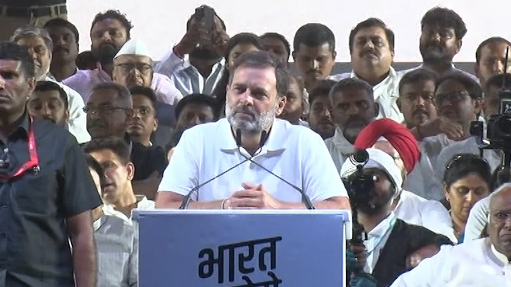

🌟 आजचा महाराष्ट्र 🌟
📞 फोन: +91 9876543210
📧 ईमेल: contact@ajchabharat.com
🔗 वेबसाईट: www.ajchabharat.com
20-01-2025 सोमवार
बजरंग दल
सलमान खान ठरला अक्षय
आरोग्याच्या समस्यांमुळे एकनाथ शिंदे यांनी स्वतःहून वक्तव्य केले आहे की, "सरकार स्थापनेसाठी माझ्या बाजूने कोणतीही अडचण नाही. महायुती अधिक बळकट करणे हाच आमचा उद्देश आहे, आणि केंद्राच्या निर्णयाला पूर्ण पाठिंबा असेल."आरोग्याच्या समस्यांमुळे एकनाथ शिंदे यांनी स्वतःहून वक्तव्य केले आहे की, "सरकार स्थापनेसाठी माझ्या बाजूने कोणतीही अडचण नाही. महायुती अधिक बळकट करणे हाच आमचा उद्देश आहे, आणि केंद्राच्या निर्णयाला पूर्ण पाठिंबा असेल. शिंदे यांनी स्वतःहून वक्तव्य केले आहे की, "सरकार स्थापनेसाठी माझ्या शिंदे यांनी स्वतःहून वक्तव्य केले आहे की, "सरकार स्थापनेसाठी माझ्या शिंदे यांनी स्वतःहून वक्तव्य केले आहे की, "सरकार स्थापनेसाठी माझ्या"आरोग्याच्या समस्यांमुळे एकनाथ शिंदे यांनी स्वतःहून वक्तव्य केले आहे की, "सरकार स्थापनेसाठी माझ्या बाजूने कोणतीही अडचण नाही. महायुती अधिक बळकट
जिल्ह्यातील पारधी समाजातील विद्यार्थ्यांची होणारी संपुष्टात आली असून शेषनगरमधील 87 विद्यार्थ्यांना
महाराष्ट्राचे मुख्यमंत्री एकनाथ शिंदे यांची तब्येततब्येत अचानक बिघडल्याने त्यांच्या मूळ गावी, साताऱ्यातील दरे येथे डॉक्टरांची टीम तपासणीसाठी पोहोचली आहे. शिंदे यांना सर्दी, खोकला आणि तापाची तक्रार असल्याचे समोर आले आहे. तापाचे प्रमाण 104 डिग्रीपर्यंत पोहोचल्याने त्यांना आराम करण्याचा सल्ला देण्यात आला आहे. महाराष्ट्राचे मुख्यमंत्री एकनाथ शिंदे यांची तब्येत अचानक बिघडल्याने त्यांच्या मूळ गावी, साताऱ्यातील दरे येथे डॉक्टरांची टीम तपासणीसाठी पोहोचली आहे. शिंदे यांना सर्दी, खोकला आणि तापाची तक्रार असल्याचे समोर आले आहे. तापाचे प्रमाण 104 डिग्रीपर्यंत साताऱ्यातील
महाराष्ट्राचे मुख्यमंत्री सल्ला देण्यात आला आहे. महाराष्ट्राचे मुख्यमंत्री एकनाथ शिंदे यांची तब्येत अचानक बिघडल्याने त्यांच्या मूळ गावी, साताऱ्यातील दरे येथे डॉक्टरांची टीम तपासणीसाठी पोहोचली आहे. शिंदे यांना सर्दी, खोकला आणि तापाची तक्रार असल्याचे समोर आले आहे. तापाचे प्रमाण तापाचे प्रमाण
महाराष्ट्राचे मुख्यमंत्री सल्ला देण्यात आला आहे. महाराष्ट्राचे मुख्यमंत्री एकनाथ शिंदे यांची तब्येत अचानक बिघडल्याने त्यांच्या मूळ गावी, साताऱ्यातील दरे येथे डॉक्टरांची टीम तपासणीसाठी पोहोचली आहे. शिंदे यांना सर्दी, खोकला आणि तापाची तक्रार असल्याचे समोर आले आहे. तापाचे प्रमाण
महाराष्ट्राचे मुख्यमंत्री सल्ला देण्यात आला आहे. महाराष्ट्राचे मुख्यमंत्री एकनाथ शिंदे यांची तब्येत अचानक बिघडल्याने त्यांच्या मूळ गावी, साताऱ्यातील दरे येथे डॉक्टरांची टीम तपासणीसाठी पोहोचली आहे. शिंदे यांना सर्दी, खोकला आणि तापाची तक्रार असल्याचे समोर आले आहे. तापाचे प्रमाण
'सरकार स्थापनेसाठी माझ्या बाजूने कोणतीही अडचण नाही'
महाराष्ट्राचे मुख्यमंत्री एकनाथ शिंदे यांची तब्येत अचानक बिघडल्याने त्यांच्या मूळ गावी, साताऱ्यातील दरे येथे डॉक्टरांची टीम तपासणीसाठी पोहोचली आहे. शिंदे यांना सर्दी, खोकला आणि तापाची तक्रार असल्याचे समोर आले आहे. तापाचे प्रमाण 104 डिग्रीपर्यंत पोहोचल्याने त्यांना आराम करण्याचा सल्ला देण्यात आला आहे. महाराष्ट्राचे मुख्यमंत्री एकनाथ शिंदे यांची तब्येत अचानक बिघडल्याने त्यांच्या मूळ गावी, साताऱ्यातील दरे येथे डॉक्टरांची टीम तपासणीसाठी पोहोचली आहे तपासणीसाठी पोहोचली आहे.तपासणीसाठी पोहोचली आहे शिंदे
शिंदे यांची तब्येत अचानक बिघडल्याने त्यांच्या मूळ गावी, साताऱ्यातील दरे येथे डॉक्टरांची टीम तपासणीसाठी पोहोचली आहे. शिंदे यांना सर्दी, खोकला आणि तापाची तक्रार असल्याचे समोर आले आहे. तापाचे प्रमाण 104 डिग्रीपर्यंत पोहोचल्याने त्यांना आराम करण्याचा सल्ला देण्यात आला आहे. महाराष्ट्राचे मुख्यमंत्री एकनाथ शिंदे यांची तब्येत अचानक बिघडल्याने त्यांच्या मूळ गावी, साताऱ्यातील दरे येथे डॉक्टरांची टीम तपासणीसाठी पोहोचली आहे. शिंदे यांना सर्दी, खोकला आणि तापाची तक्रार असल्याचे समोर आले आहे. तापाचे प्रमाण 104 डिग्रीपर्यंत पोहोचल्याने त्यांना. पोहोचल्याने त्यांना महाराष्ट्राचे मुख्यमंत्री
जिल्ह्यातील पारधी समाजातील विद्यार्थ्यांची होणारी संपुष्टात आली असून शेषनगरमधील 87 विद्यार्थ्यांना
येथे डॉक्टरांची टीम तपासणीसाठी पोहोचली आहे. शिंदे यांना सर्दी, खोकला आणि तापाची तक्रार असल्याचे समोर आले आहे. तापाचे प्रमाण 104 डिग्रीपर्यंत पोहोचल्याने त्यांना आराम करण्याचा सल्ला देण्यात आला आहे. महाराष्ट्राचे मुख्यमंत्री एकनाथ शिंदे यांची तब्येत अचानक बिघडल्याने त्यांच्या मूळ गावी, साताऱ्यातील दरे येथे डॉक्टरांची टीम तपासणीसाठी पोहोचली आहे.
येथे डॉक्टरांची टीम तपासणीसाठी पोहोचली आहे. शिंदे यांना सर्दी, खोकला आणि तापाची तक्रार असल्याचे समोर आले आहे. तापाचे प्रमाण 104 डिग्रीपर्यंत पोहोचल्याने त्यांना आराम करण्याचा सल्ला देण्यात आला आहे. महाराष्ट्राचे मुख्यमंत्री एकनाथ शिंदे यांची तब्येत अचानक बिघडल्याने त्यांच्या मूळ गावी, साताऱ्यातील दरे येथे डॉक्टरांची टीम तपासणीसाठी पोहोचली आहे.

येथे डॉक्टरांची टीम तपासणीसाठी पोहोचली आहे. शिंदे यांना सर्दी, डिग्रीपर्यंत पोहोचल्याने त्यांना डिग्रीपर्यंत पोहोचल्याने त्यांना त्यांना त्यांना त्यांना खोकला आणि तापाची तक्रार असल्याचे समोर आले आहे. तापाचे प्रमाण 104 डिग्रीपर्यंत पोहोचल्याने त्यांना
येथे डॉक्टरांची टीम तपासणीसाठी पोहोचली आहे. शिंदे यांना सर्दी, डिग्रीपर्यंत पोहोचल्याने त्यांना डिग्रीपर्यंत पोहोचल्याने त्यांना त्यांना त्यांना त्यांना खोकला आणि तापाची तक्रार असल्याचे समोर आले आहे. तापाचे प्रमाण 104 डिग्रीपर्यंत पोहोचल्याने त्यांना
येथे डॉक्टरांची टीम तपासणीसाठी पोहोचली आहे. शिंदे यांना सर्दी, खोकला आणि तापाची तक्रार असल्याचे समोर आले आहे. तापाचे प्रमाण 104 डिग्रीपर्यंत पोहोचल्याने त्यांना आराम करण्याचा सल्ला देण्यात आला आहे. महाराष्ट्राचे मुख्यमंत्री एकनाथ शिंदे यांची तब्येत अचानक बिघडल्याने त्यांच्या मूळ गावी, साताऱ्यातील दरे येथे डॉक्टरांची टीम तपासणीसाठी पोहोचली आहे.
डिग्री ताप; शपथविधी कार्यक्रमात एकनाथ उपस्थिती संशयास्प
बिग बींनी एका झटक्यात कमावले ८३ कोटी! मुंबईतील बिग बींनी एका झटक्यात कमावले ८३ कोटी! मुंबईतील बिग बींनी एका झट

आरोग्याच्या समस्यांमुळे एकनाथ शिंदे यांनी स्वतःहून वक्तव्य केले आहे की, "सरकार स्थापनेसाठी माझ्या बाजूने कोणतीही अडचण नाही. महायुती अधिक बळकट करणे हाच आमचा उद्देश आहे, आणि केंद्राच्या निर्णयाला पूर्ण पाठिंबा असेल."आरोग्याच्या समस्यांमुळे एकनाथ शिंदे यांनी स्वतःहून वक्तव्य केले आहे की, "सरकार स्थापनेसाठी माझ्या बाजूने कोणतीही अडचण नाही. महायुती अधिक बळकट करणे हाच आमचा उद्देश आहे, आणि केंद्राच्या निर्णयाला पूर्ण पाठिंबा असेल."आरोग्याच्या समस्यांमुळे एकनाथ शिंदे यांनी स्वतःहून वक्तव्य केले आहे की, "सरकार स्थापनेसाठी माझ्या बाजूने कोणतीही अडचण नाही. महायुती अधिक बळकट करणे
आरोग्याच्या समस्यांमुळे एकनाथ शिंदे यांनी स्वतःहून वक्तव्य केले आहे की, "सरकार स्थापनेसाठी माझ्या बाजूने कोणतीही अडचण नाही. महायुती अधिक बळकट करणे हाच आमचा उद्देश आहे, आणि केंद्राच्या निर्णयाला पूर्ण पाठिंबा असेल."आरोग्याच्या समस्यांमुळे एकनाथ शिंदे यांनी स्वतःहून वक्तव्य केले आहे की, "सरकार स्थापनेसाठी माझ्या बाजूने कोणतीही अडचण नाही. महायुती अधिक बळकट करणे हाच आमचा उद्देश आहे, आणि केंद्राच्या निर्णयाला पूर्ण पाठिंबा असेल."आरोग्याच्या समस्यांमुळे एकनाथ शिंदे यांनी स्वतःहून वक्तव्य केले आहे की, "सरकार स्थापनेसाठी माझ्या बाजूने कोणतीही अडचण नाही. महायुती अधिक बळकट करणे
आरोग्याच्या समस्यांमुळे एकनाथ शिंदे यांनी स्वतःहून वक्तव्य केले आहे की, "सरकार स्थापनेसाठी माझ्या बाजूने कोणतीही अडचण नाही. महायुती अधिक बळकट करणे हाच आमचा उद्देश आहे, आणि केंद्राच्या निर्णयाला पूर्ण पाठिंबा असेल."आरोग्याच्या समस्यांमुळे एकनाथ शिंदे यांनी स्वतःहून वक्तव्य केले आहे की, "सरकार स्थापनेसाठी माझ्या बाजूने कोणतीही अडचण नाही. महायुती अधिक बळकट करणे हाच आमचा उद्देश आहे, आणि केंद्राच्या निर्णयाला पूर्ण पाठिंबा असेल."आरोग्याच्या समस्यांमुळे एकनाथ शिंदे यांनी स्वतःहून वक्तव्य केले आहे की, "सरकार स्थापनेसाठी माझ्या बाजूने कोणतीही अडचण नाही. महायुती अधिक बळकट करणे आरोग्याच्या समस्यांमुळे एकनाथ शिंदे यांनी स्वतःहून वक्तव्य केले आहे की, "सरकार स्थापनेसाठी माझ्या बाजूने कोणतीही अडचण नाही. महायुती अधिक बळकट करणे हाच आमचा उद्देश आहे, आणि केंद्राच्या निर्णयाला पूर्ण पाठिंबा असेल."आरोग्याच्या समस्यांमुळे एकनाथ शिंदे यांनी स्वतःहून वक्तव्य केले आहे की, "सरकार स्थापनेसाठी माझ्या बाजूने कोणतीही अडचण नाही. महायुती अधिक बळकट करणे हाच आमचा उद्देश आहे, आणि केंद्राच्या निर्णयाला पूर्ण पाठिंबा
आरोग्याच्या समस्यांमुळे एकनाथ शिंदे यांनी स्वतःहून वक्तव्य केले आहे की, "सरकार स्थापनेसाठी माझ्या बाजूने कोणतीही अडचण नाही. महायुती अधिक बळकट करणे हाच आमचा उद्देश आहे, आणि केंद्राच्या निर्णयाला पूर्ण पाठिंबा असेल."आरोग्याच्या समस्यांमुळे एकनाथ शिंदे यांनी स्वतःहून वक्तव्य केले आहे की, "सरकार स्थापनेसाठी माझ्या बाजूने कोणतीही अडचण नाही. महायुती अधिक बळकट करणे हाच आमचा उद्देश आहे, आणि केंद्राच्या निर्णयाला पूर्ण पाठिंबा असेल."आरोग्याच्या समस्यांमुळे एकनाथ शिंदे यांनी स्वतःहून वक्तव्य केले आहे की, "सरकार स्थापनेसाठी माझ्या बाजूने कोणतीही अडचण नाही. महायुती अधिक बळकट करणे आरोग्याच्या समस्यांमुळे एकनाथ शिंदे यांनी स्वतःहून वक्तव्य केले आहे की, "सरकार स्थापनेसाठी माझ्या बाजूने कोणतीही अडचण नाही. महायुती अधिक बळकट करणे हाच आमचा उद्देश आहे, आणि केंद्राच्या निर्णयाला पूर्ण पाठिंबा असेल."आरोग्याच्या समस्यांमुळे एकनाथ शिंदे यांनी स्वतःहून वक्तव्य केले आहे की, "सरकार स्थापनेसाठी माझ्या बाजूने कोणतीही अडचण नाही. महायुती अधिक बळकट करणे हाच आमचा उद्देश आहे, आणि केंद्राच्या निर्णयाला पूर्ण पाठिंबा
बिग बींनी एका झटक्यात कमावले ८३ कोटी! मुंबईतील
आरोग्याच्या समस्यां आरोग्याच् समस्यांमुळे एकनाथ शिंदे यांनी स्वतःहून वक्तव्य केले आहे की, "सरकार स्थापनेसाठी माझ्या बाजूने कोणतीही अडचण नाही. महायुती अधिक बळकट करणे हाच आमचा उद्देश आहे, आणि केंद्राच्या निर्णयाला पूर्ण पाठिंबा असेल."आरोग्याच्या समस्यांमुळे एकनाथ शिंदे यांनी स्वतःहून वक्तव्य केले आहे की, "सरकार स्थापनेसाठी माझ्या बाजूने कोणतीही अडचण नाही. महायुती अधिक बळकट करणे हाच आमचा उद्देश आहे, आणि केंद्राच्या निर्णयाला पूर्ण पाठिंबा असेल."आरोग्याच्या समस्यांमुळे एकनाथ शिंदे यांनी स्वतःहून
आरोग्याच्या समस्यां आरोग्या समस्यांमुळे एकनाथ शिंदे यांनी स्वतःहून वक्तव्य केले आहे की, "सरकार स्थापनेसाठी माझ्या बाजूने कोणतीही अडचण नाही. महायुती अधिक बळकट करणे हाच आमचा उद्देश आहे, आणि केंद्राच्या निर्णयाला पूर्ण पाठिंबा असेल."आरोग्याच्या समस्यांमुळे एकनाथ शिंदे यांनी स्वतःहून वक्तव्य केले आहे की, "सरकार स्थापनेसाठी माझ्या बाजूने कोणतीही अडचण नाही. महायुती अधिक बळकट करणे हाच आमचा उद्देश आहे, आणि केंद्राच्या निर्णयाला पूर्ण पाठिंबा असेल."आरोग्याच्या समस्यांमुळे एकनाथ शिंदे यांनी स्वतःहून
ब्रेकिंग न्यूज
महाराष्ट्राचे मुख्यमंत्री एकनाथ शिंदे यांची तब्येत अचानक बिघडल्याने त्यांच्या मूळ गावी, साताऱ्यातील दरे येथे डॉक्टरांची टीम तपासणीसाठी पोहोचली आहे. शिंदे यांना सर्दी, खोकला आणि तापाची तक्रार असल्याचे समोर आले आहे. तापाचे प्रमाण 104 डिग्रीपर्यंत पोहोचल्याने त्यांना आराम करण्याचा सल्ला देण्यात आला आहे. महाराष्ट्राचे मुख्यमंत्री एकनाथ शिंदे यांची तब्येत अचानक बिघडल्याने त्यांच्या मूळ गावी, साताऱ्यातील दरे येथे डॉक्टरांची टीम तपासणीसाठी पोहोचली आहे. शिंदे यांना सर्दी, खोकला आणि तापाची तक्रार असल्याचे समोर आले आहे. तापाचे प्रमाण 104 डिग्रीपर्यंत पोहोचल्याने त्यांना .महाराष्ट्राचे मुख्यमंत्री एकनाथ शिंदे यांची तब्येत अचानक साताऱ्यातील दरे येथे डॉक्टरांची टीम तपासणीसाठी पोहोचली
"पंतप्रधान मोदींच्या निर्णयानुसार महायुतीचे पुढील धोरण ठरणार"
महाराष्ट्राचे मुख्यमंत्री एकनाथ शिंदे यांची तब्येत अचानक बिघडल्याने त्यांच्या मूळ गावी, साताऱ्यातील दरे येथे डॉक्टरांची टीम तपासणीसाठी पोहोचली आहे. शिंदे यांना सर्दी, खोकला आणि तापाची तक्रार असल्याचे समोर आले आहे. तापाचे प्रमाण 104 डिग्रीपर्यंत पोहोचल्याने त्यांना आराम करण्याचा सल्ला देण्यात आला आहे. महाराष्ट्राचे मुख्यमंत्री एकनाथ शिंदे यांची तब्येत अचानक बिघडल्याने त्यांच्या मूळ गावी, साताऱ्यातील दरे येथे डॉक्टरांची टीम तपासणीसाठी पोहोचली आहे. शिंदे यांना सर्दी, खोकला आणि तापाची तक्रार असल्याचे समोर आले आहे. तापाचे प्रमाण 104 डिग्रीपर्यंत पोहोचल्याने त्यांना .महाराष्ट्राचे मुख्यमंत्री एकनाथ शिंदे यांची तब्येत अचानक बिघडल्याने त्यांच्या मूळ गावी, साताऱ्यातील दरे येथे डॉक्टरांची टीम तपासणीसाठी पोहोचली साताऱ्यातील दरे येथे डॉक्टरांची टीम तपासणीसाठी पोहोचली
महाराष्ट्राचे मुख्यमंत्री एकनाथ शिंदे यांची तब्येत अचानक बिघडल्याने त्यांच्या मूळ गावी, साताऱ्यातील दरे येथे डॉक्टरांची टीम तपासणीसाठी पोहोचली आहे. शिंदे यांना सर्दी, खोकला आणि तापाची तक्रार असल्याचे समोर आले आहे. तापाचे प्रमाण 104 डिग्रीपर्यंत पोहोचल्याने त्यांना आराम करण्याचा सल्ला देण्यात आला आहे. महाराष्ट्राचे मुख्यमंत्री एकनाथ शिंदे यांची तब्येत अचानक बिघडल्याने त्यांच्या मूळ गावी, साताऱ्यातील दरे येथे डॉक्टरांची टीम तपासणीसाठी पोहोचली आहे. शिंदे यांना सर्दी, खोकला आणि तापाची तक्रार असल्याचे समोर आले आहे. तापाचे प्रमाण 104 डिग्रीपर्यंत पोहोचल्याने त्यांना .महाराष्ट्राचे मुख्यमंत्री एकनाथ शिंदे यांची तब्येत अचानक बिघडल्याने त्यांच्या मूळ गावी, साताऱ्यातील दरे येथे डॉक्टरांची टीम तपासणीसाठी पोहोचली साताऱ्यातील दरे येथे डॉक्टरांची टीम तपासणीसाठी पोहोचली
महाराष्ट्राचे मुख्यमंत्री एकनाथ शिंदे यांची तब्येत अचानक बिघडल्याने त्यांच्या मूळ गावी, साताऱ्यातील दरे येथे डॉक्टरांची टीम तपासणीसाठी पोहोचली आहे. शिंदे यांना सर्दी, खोकला आणि तापाची तक्रार असल्याचे समोर आले आहे. तापाचे प्रमाण 104 डिग्रीपर्यंत पोहोचल्याने त्यांना आराम करण्याचा सल्ला देण्यात आला आहे. महाराष्ट्राचे मुख्यमंत्री एकनाथ शिंदे यांची तब्येत अचानक बिघडल्याने त्यांच्या मूळ गावी, साताऱ्यातील दरे येथे डॉक्टरांची टीम तपासणीसाठी पोहोचली आहे. शिंदे यांना सर्दी, खोकला आणि तापाची तक्रार असल्याचे समोर आले आहे. तापाचे प्रमाण 104 डिग्रीपर्यंत पोहोचल्याने त्यांना .महाराष्ट्राचे मुख्यमंत्री एकनाथ शिंदे यांची तब्येत अचानक साताऱ्यातील दरे येथे डॉक्टरांची टीम तपासणीसाठी पोहोचली
महाराष्ट्राचे मुख्यमंत्री एकनाथ शिंदे यांची तब्येत अचानक बिघडल्याने त्यांच्या मूळ गावी, साताऱ्यातील दरे येथे डॉक्टरांची टीम तपासणीसाठी पोहोचली आहे. शिंदे यांना सर्दी, खोकला आणि तापाची तक्रार असल्याचे समोर आले आहे. तापाचे प्रमाण 104 डिग्रीपर्यंत पोहोचल्याने त्यांना आराम करण्याचा सल्ला देण्यात आला आहे. महाराष्ट्राचे मुख्यमंत्री एकनाथ शिंदे यांची तब्येत अचानक बिघडल्याने त्यांच्या मूळ गावी, साताऱ्यातील दरे येथे डॉक्टरांची टीम तपासणीसाठी पोहोचली आहे. शिंदे यांना सर्दी, खोकला आणि तापाची तक्रार असल्याचे समोर आले आहे. तापाचे प्रमाण 104 डिग्रीपर्यंत पोहोचल्याने त्यांना .महाराष्ट्राचे मुख्यमंत्री एकनाथ शिंदे यांची तब्येत अचानक बिघडल्याने त्यांच्या मूळ गावी, साताऱ्यातील दरे येथे डॉक्टरांची टीम तपासणीसाठी पोहोचली साताऱ्यातील दरे येथे डॉक्टरांची टीम तपासणीसाठी पोहोचली
डिग्री ताप; शपथविधी कार्यक्रमात एकनाथ उपस्थिती संशयास्प
महाराष्ट्राचे मुख्यमंत्री एकनाथ शिंदे यांची तब्येत अचानक बिघडल्याने त्यांच्या मूळ गावी, साताऱ्यातील दरे येथे डॉक्टरांची टीम तपासणीसाठी पोहोचली आहे. शिंदे यांना सर्दी, खोकला आणि तापाची तक्रार असल्याचे समोर आले आहे. तापाचे प्रमाण 104 डिग्रीपर्यंत पोहोचल्याने त्यांना आराम करण्याचा सल्ला देण्यात आला आहे. महाराष्ट्राचे मुख्यमंत्री एकनाथ शिंदे यांची तब्येत अचानक बिघडल्याने त्यांच्या मूळ गावी, साताऱ्यातील दरे येथे डॉक्टरांची टीम तपासणीसाठी पोहोचली आहे. शिंदे यांना सर्दी, खोकला आणि तापाची तक्रार असल्याचे समोर आले आहे. तापाचे प्रमाण 104 डिग्रीपर्यंत पोहोचल्याने त्यांना .महाराष्ट्राचे मुख्यमंत्री एकनाथ शिंदे यांची तब्येत अचानक साताऱ्यातील दरे येथे डॉक्टरांची टीम तपासणीसाठी पोहोचली महाराष्ट्राचे मुख्यमंत्री एकनाथ शिंदे यांची तब्येत अचानक बिघडल्याने त्यांच्या मूळ गावी, साताऱ्यातील दरे येथे डॉक्टरांची टीम तपासणीसाठी पोहोचली आहे. शिंदे यांना सर्दी, खोकला आणि तापाची तक्रार असल्याचे समोर आले आहे. तापाचे प्रमाण 104 डिग्रीपर्यंत पोहोचल्याने त्यांना आराम करण्याचा सल्ला देण्यात आला आहे. महाराष्ट्राचे मुख्यमंत्री महाराष्ट्राचे मुख्यमंत्री महाराष्ट्राचे मुख्यमंत्री महाराष्ट्राचे मुख्यमंत्री महाराष्ट्राचे मुख्यमंत्री एकनाथ शिंदे यांची तब्येत अचानक बिघडल्याने त्डॉक्टरांची महाराष्ट्राचे मुख्यमंत्री एकनाथ शिंदे यांची तब्येत अचानक बिघडल्याने त्डॉक्टरांची महाराष्ट्राचे मुख्यमंत्री एकनाथ शिंदे यांची तब्येत अचानक बिघडल्याने त्डॉक्टरांची महाराष्ट्राचे मुख्यमंत्री एकनाथ शिंदे यांची तब्येत अचानक बिघडल्याने त्डॉक्टरांची महाराष्ट्राचे मुख्यमंत्री एकनाथ शिंदे यांची तब्येत अचानक बिघडल्याने त्डॉक्टरांची महाराष्ट्राचे मुख्यमंत्री एकनाथ शिंदे यांची तब्येत अचानक बिघडल्याने त्डॉक्टरांची महाराष्ट्राचे मुख्यमंत्री एकनाथ शिंदे यांची तब्येत अचानक बिघडल्याने त्डॉक्टरांची महाराष्ट्राचे मुख्यमंत्री एकनाथ शिंदे यांची तब्येत
डिग्री ताप; शपथविधी कार्यक्रमात एकनाथ उपस्थिती संशयास्प डिग्री ताप; शपथविधी
महाराष्ट्राचे मुख्यमंत्री एकनाथ शिंदे यांची तब्येत अचानक बिघडल्याने त्यांच्या मूळ गावी, साताऱ्यातील दरे येथे डॉक्टरांची टीम तपासणीसाठी पोहोचली आहे. शिंदे यांना सर्दी, खोकला आणि तापाची तक्रार असल्याचे समोर आले आहे. तापाचे प्रमाण 104 डिग्रीपर्यंत पोहोचल्याने त्यांना आराम करण्याचा सल्ला देण्यात आला आहे. महाराष्ट्राचे मुख्यमंत्री एकनाथ शिंदे यांची तब्येत अचानक बिघडल्याने त्यांच्या मूळ गावी, साताऱ्यातील दरे येथे डॉक्टरांची टीम तपासणीसाठी पोहोचली आहे. शिंदे यांना सर्दी, खोकला आणि तापाची तक्रार असल्याचे समोर आले आहे. तापाचे प्रमाण 104 डिग्रीपर्यंत पोहोचल्याने त्यांना .महाराष्ट्राचे मुख्यमंत्री एकनाथ शिंदे यांची तब्येत अचानक बिघडल्याने त्यांच्या मूळ गावी, साताऱ्यातील दरे येथे डॉक्टरांची टीम तापाचे प्रमाण 104 डिग्रीपर्यंत पोहोचल्याने त्यांना .महाराष्ट्राचे मुख्यमंत्री एकनाथ शिंदे यांची तब्येत अचानक बिघडल्याने त्यांच्या मूळ गावी, साताऱ्यातील दरे येथे डॉक्टरांची टीम तापाचे प्रमाण 104 डिग्रीपर्यंत पोहोचल्याने त्यांना .महाराष्ट्राचे मुख्यमंत्री एकनाथ शिंदेतब्येत अचानक बिघडल्याने त्यांच्या मूळ गावी तब्येत अचानक बिघडल्याने त्यांच्या मूळ गावी तब्येत अचानक बिघडल्याने त्यांच्या मूळ गावी
महाराष्ट्राचे मुख्यमंत्री एकनाथ शिंदे यांची तब्येत अचानक बिघडल्याने त्यांच्या मूळ गावी, साताऱ्यातील दरे येथे डॉक्टरांची टीम तपासणीसाठी पोहोचली आहे. शिंदे यांना सर्दी, खोकला आणि तापाची तक्रार असल्याचे समोर आले आहे. तापाचे प्रमाण 104 डिग्रीपर्यंत पोहोचल्याने त्यांना आराम करण्याचा सल्ला देण्यात आला आहे. महाराष्ट्राचे मुख्यमंत्री एकनाथ शिंदे यांची तब्येत अचानक बिघडल्याने त्यांच्या मूळ गावी, साताऱ्यातील दरे येथे डॉक्टरांची टीम तपासणीसाठी पोहोचली आहे. शिंदे यांना सर्दी, खोकला आणि तापाची तक्रार असल्याचे समोर आले आहे. तापाचे प्रमाण 104 डिग्रीपर्यंत पोहोचल्याने त्यांना .महाराष्ट्राचे मुख्यमंत्री एकनाथ शिंदे यांची तब्येत अचानक बिघडल्याने त्यांच्या मूळ गावी, साताऱ्यातील दरे येथे डॉक्टरांची टीम तापाचे प्रमाण 104 डिग्रीपर्यंत पोहोचल्याने त्यांना .महाराष्ट्राचे मुख्यमंत्री एकनाथ शिंदे यांची तब्येत अचानक बिघडल्याने त्यांच्या मूळ गावी, साताऱ्यातील दरे येथे डॉक्टरांची टीम तापाचे प्रमाण 104 डिग्रीपर्यंत पोहोचल्याने त्यांना .महाराष्ट्राचे मुख्यमंत्री एकनाथ शिंदे यांची तब्येत तब्येत अचानक बिघडल्याने त्यांच्या मूळ गावी तब्येत अचानक बिघडल्याने त्यांच्या मूळ गावी तब्येत अचानक बिघडल्याने त्यांच्या मूळ गावी
डिग्री ताप; शपथविधी कार्यक्रमात एकनाथ उपस्थिती संशयास्प
महाराष्ट्राचे मुख्यमंत्री एकनाथ शिंदे यांची तब्येत अचानक बिघडल्याने त्यांच्या मूळ गावी, साताऱ्यातील दरे येथे डॉक्टरांची टीम तपासणीसाठी पोहोचली आहे. शिंदे यांना सर्दी, खोकला आणि तापाची तक्रार असल्याचे समोर आले आहे. तापाचे प्रमाण 104 डिग्रीपर्यंत पोहोचल्याने त्यांना आराम करण्याचा सल्ला देण्यात आला आहे. महाराष्ट्राचे मुख्यमंत्री एकनाथ शिंदे यांची तब्येत अचानक बिघडल्याने त्यांच्या मूळ गावी, साताऱ्यातील दरे येथे डॉक्टरांची टीम तपासणीसाठी पोहोचली आहे. शिंदे यांना सर्दी, खोकला आणि तापाची तक्रार असल्याचे समोर आले आहे.

महाराष्ट्राचे मुख्यमंत्री एकनाथ शिंदे यांची तब्येत अचानक बिघडल्याने त्यांच्या मूळ गावी, साताऱ्यातील दरे येथे डॉक्टरांची टीम तपासणीसाठी पोहोचली आहे. शिंदे यांना सर्दी, खोकला आणि तापाची तक्रार असल्याचे समोर आले आहे. तापाचे प्रमाण
महाराष्ट्राचे मुख्यमंत्री एकनाथ शिंदे यांची तब्येत अचानक बिघडल्याने त्यांच्या मूळ गावी, साताऱ्यातील दरे येथे डॉक्टरांची टीम तपासणीसाठी पोहोचली आहे. शिंदे यांना सर्दी, खोकला आणि तापाची तक्रार असल्याचे समोर आले आहे. तापाचे प्रमाण 104 डिग्रीपर्यंत पोहोचल्याने त्यांना डिग्रीपर्यंत पोहोचल्याने त्यांना आराम करण्याचा सल्ला देण्यात आला आहे. महाराष्ट्राचे मुख्यमंत्री एकनाथ शिंदे यांची तब्येत अचानक बिघडल्याने त्यांच्या मूळ गावी, साताऱ्यातील दरे येथे डॉक्टरांची टीम तपासण
डिग्री ताप; शपथविधी कार्यक्रमात एकनाथ उपस्थिती संशयास्प डिग्री ताप; शपथविधी कार्यक्रमात एकनाथ
आरोग्याच्या समस्यांमुळे एकनाथ शिंदे यांनी स्वतःहून वक्तव्य केले आहे की, "सरकार स्थापनेसाठी माझ्या बाजूने कोणतीही अडचण नाही. महायुती अधिक बळकट करणे हाच आमचा उद्देश आहे, आणि केंद्राच्या निर्णयाला पूर्ण पाठिंबा असेल."आरोग्याच्या समस्यांमुळे एकनाथ शिंदे यांनी स्वतःहून वक्तव्य केले आहे की, "सरकार स्थापनेसाठी माझ्या बाजूने कोणतीही
आरोग्याच्या समस्यांमुळे एकनाथ शिंदे यांनी स्वतःहून वक्तव्य केले आहे की, "सरकार स्थापनेसाठी माझ्या बाजूने कोणतीही अडचण नाही. महायुती अधिक बळकट करणे हाच आमचा उद्देश आहे, आणि केंद्राच्या निर्णयाला पूर्ण पाठिंबा असेल."आरोग्याच्या समस्यांमुळे एकनाथ शिंदे यांनी स्वतःहून वक्तव्य केले आहे की, "सरकार स्थापनेसाठी माझ्या बाजूने कोणतीही
आरोग्याच्या समस्यांमुळे एकनाथ शिंदे यांनी स्वतःहून वक्तव्य केले आहे की, "सरकार स्थापनेसाठी माझ्या बाजूने कोणतीही अडचण नाही. महायुती अधिक बळकट करणे हाच आमचा उद्देश आहे, आणि केंद्राच्या निर्णयाला पूर्ण पाठिंबा असेल."आरोग्याच्या समस्यांमुळे एकनाथ शिंदे यांनी स्वतःहून वक्तव्य केले आहे की, "सरकार स्थापनेसाठी माझ्या बाजूने कोणतीही अडचण नाही. महायुती अधिक बळकट करणे हाच आमचा उद्देश आहे, आणि केंद्राच्या निर्णयाला पूर्ण पाठिंबा असेल."आरोग्याच्या समस्यांमुळे एकनाथ शिंदे यांनी स्वतःहून वक्तव्य केले आहे की, "सरकार स्थापनेसाठी माझ्या बाजूने कोणतीही अडचण नाही. महायुती अधिक बळकट करणे आरोग्याच्या समस्यांमुळे एकनाथ शिंदे यांनी स्वतःहून वक्तव्य केले आहे की, "सरकार स्थापनेसाठी माझ्या बाजूने कोणतीही अडचण नाही. महायुती अधिक बळकट आरोग्याच्या
आरोग्याच्या समस्यांमुळे एकनाथ शिंदे यांनी स्वतःहून वक्तव्य केले आहे की, "सरकार स्थापनेसाठी माझ्या बाजूने कोणतीही अडचण नाही. महायुती अधिक बळकट करणे हाच आमचा उद्देश आहे, आणि केंद्राच्या निर्णयाला पूर्ण पाठिंबा असेल."आरोग्याच्या समस्यांमुळे एकनाथ शिंदे यांनी स्वतःहून वक्तव्य केले आहे की, "सरकार स्थापनेसाठी माझ्या बाजूने कोणतीही अडचण नाही. महायुती अधिक बळकट करणे हाच आमचा उद्देश आहे, आणि केंद्राच्या निर्णयाला पूर्ण पाठिंबा असेल."आरोग्याच्या समस्यांमुळे एकनाथ शिंदे यांनी स्वतःहून वक्तव्य केले आहे की, "सरकार स्थापनेसाठी माझ्या बाजूने कोणतीही अडचण नाही. महायुती अधिक बळकट करणे आरोग्याच्या समस्यांमुळे एकनाथ शिंदे यांनी स्वतःहून वक्तव्य केले आहे की, "सरकार स्थापनेसाठी माझ्या बाजूने कोणतीही अडचण नाही. महायुती अधिक बळकट आरोग्याच्या
"पंतप्रधान मोदींच्या निर्णयानुसार महायुतीचे पुढील धोरण ठरणार निर्णयानुसार महायुतीचे पुढील"
महाराष्ट्राचे मुख्यमंत्री एकनाथ शिंदे यांची तब्येत अचानक बिघडल्याने त्यांच्या मूळ गावी, साताऱ्यातील दरे येथे डॉक्टरांची टीम तपासणीसाठी पोहोचली आहे. शिंदे यांना सर्दी, खोकला आणि तापाची तक्रार असल्याचे समोर आले आहे. तापाचे प्रमाण 104 डिग्रीपर्यंत पोहोचल्याने त्यांना आराम करण्याचा सल्ला देण्यात आला आहे. महाराष्ट्राचे मुख्यमंत्री एकनाथ शिंदे यांची तब्येत अचानक बिघडल्याने त्यांच्या मूळ गावी, साताऱ्यातील दरे येथे डॉक्टरांची टीम तपासणीसाठी पोहोचली आहे. शिंदे यांना सर्दी, खोकला आणि तापाची तक्रार असल्याचे समोर आले आहे. तापाचे प्रमाण 104 डिग्रीपर्यंत पोहोचल्याने त्यांना .महाराष्ट्राचे मुख्यमंत्री एकनाथ शिंदे खोकला आणि तापाची तक्रार असल्याचे समोर आले आहे. तापाचे प्रमाण 104 डिग्रीपर्यंत पोहोचल्याने त्यांना .महाराष्ट्राचे मुख्यमंत्री एकनाथ शिंदे खोकला आणि तापाची तक्रार असल्याचे समोर आले आहे. तापाचे प्रमाण 104 डिग्रीपर्यंत पोहोचल्याने त्यांना .महाराष्ट्राचे मुख्यमंत्री एकनाथ शिंदे खोकला आणि तापाची तक्रार असल्याचे समोर आले आहे. तापाचे प्रमाण 104
महाराष्ट्राचे मुख्यमंत्री एकनाथ शिंदे यांची तब्येत अचानक बिघडल्याने त्यांच्या मूळ गावी, साताऱ्यातील दरे येथे डॉक्टरांची टीम तपासणीसाठी पोहोचली आहे. शिंदे यांना सर्दी, खोकला आणि तापाची तक्रार असल्याचे समोर आले आहे. तापाचे प्रमाण 104 डिग्रीपर्यंत पोहोचल्याने त्यांना आराम करण्याचा सल्ला देण्यात आला आहे. महाराष्ट्राचे मुख्यमंत्री एकनाथ शिंदे यांची तब्येत अचानक बिघडल्याने त्यांच्या मूळ गावी, साताऱ्यातील दरे येथे डॉक्टरांची टीम तपासणीसाठी पोहोचली आहे. शिंदे यांना सर्दी, खोकला आणि तापाची तक्रार असल्याचे समोर आले आहे. तापाचे प्रमाण 104 डिग्रीपर्यंत पोहोचल्याने त्यांना .महाराष्ट्राचे मुख्यमंत्री एकनाथ शिंदे खोकला आणि तापाची तक्रार असल्याचे समोर आले आहे. तापाचे प्रमाण 104 डिग्रीपर्यंत पोहोचल्याने त्यांना .महाराष्ट्राचे मुख्यमंत्री एकनाथ शिंदे खोकला आणि तापाची तक्रार असल्याचे समोर आले आहे. तापाचे प्रमाण 104 डिग्रीपर्यंत पोहोचल्याने त्यांना .महाराष्ट्राचे मुख्यमंत्री एकनाथ शिंदे खोकला आणि तापाची तक्रार असल्याचे समोर आले आहे. तापाचे प्रमाण 104
"पंतप्रधान मोदींच्या निर्णयानुसार महायुतीचे पुढील धोरण ठरणार निर्णयानुसार महायुतीचे पुढील"
महाराष्ट्राचे मुख्यमंत्री एकनाथ शिंदे यांची तब्येत अचानक बिघडल्याने त्यांच्या मूळ गावी, साताऱ्यातील दरे येथे डॉक्टरांची टीम तपासणीसाठी पोहोचली आहे. शिंदे यांना सर्दी, खोकला आणि तापाची तक्रार असल्याचे समोर आले आहे. तापाचे प्रमाण 104 डिग्रीपर्यंत पोहोचल्याने त्यांना आराम करण्याचा सल्ला देण्यात आला आहे. महाराष्ट्राचे मुख्यमंत्री एकनाथ शिंदे यांची तब्येत अचानक बिघडल्याने त्यांच्या मूळ गावी, साताऱ्यातील दरे येथे डॉक्टरांची टीम
महाराष्ट्राचे मुख्यमंत्री एकनाथ शिंदे यांची तब्येत अचानक बिघडल्याने त्यांच्या मूळ गावी, साताऱ्यातील दरे येथे डॉक्टरांची टीम तपासणीसाठी पोहोचली आहे. शिंदे यांना सर्दी, खोकला आणि तापाची तक्रार असल्याचे समोर आले आहे. तापाचे प्रमाण 104 डिग्रीपर्यंत पोहोचल्याने त्यांना आराम करण्याचा सल्ला देण्यात आला आहे. महाराष्ट्राचे मुख्यमंत्री एकनाथ शिंदे यांची तब्येत अचानक बिघडल्याने त्यांच्या मूळ गावी, साताऱ्यातील दरे येथे डॉक्टरांची टीम डॉक्टरांची टीम डॉक्टरांची टीम
महाराष्ट्राचे मुख्यमंत्री एकनाथ शिंदे यांची तब्येत अचानक बिघडल्याने त्यांच्या मूळ गावी, साताऱ्यातील दरे येथे डॉक्टरांची टीम तपासणीसाठी पोहोचली आहे. शिंदे यांना सर्दी, खोकला आणि तापाची तक्रार असल्याचे समोर आले आहे. तापाचे प्रमाण 104 डिग्रीपर्यंत पोहोचल्याने त्यांना आराम करण्याचा सल्ला देण्यात आला आहे. महाराष्ट्राचे मुख्यमंत्री एकनाथ शिंदे यांची तब्येत अचानक बिघडल्याने त्यांच्या मूळ गावी, साताऱ्यातील दरे येथे डॉक्टरांची टीम तपासणीसाठी पोहोचली आहे. शिंदे यांना
जिल्ह्यातील पारधी समाजातील विद्यार्थ्यांची होणारी संपुष्टात आली असून शेषनगरमधील 87 विद्यार्थ्यांना
महाराष्ट्राचे मुख्यमंत्री एकनाथ शिंदे यांची तब्येत अचानक बिघडल्याने त्यांच्या मूळ गावी, साताऱ्यातील दरे येथे डॉक्टरांची टीम तपासणीसाठी पोहोचली आहे. शिंदे यांना सर्दी, खोकला0साताऱ्यातील दरे येथे डॉक्टरांची टीम तपासणीसाठी पोहोचली आहे. शिंदे यांना सर्दी, साताऱ्यातील दरे येथे डॉक्टरांची टीम तपासणीसाठी पोहोचलीम आणि तापाची तक्रार असल्याचे समोर आले आहे. तापाचे प्रमाण 104 डिग्रीपर्यंत पोहोचल्याने त्यांना आराम करण्याचा सल्ला देण्यात आला आहे. महाराष्ट्राचे मुख्यमंत्री एकनाथ शिंदे यांची तब्येत अचानक बिघडल्याने महाराष्ट्राचे मुख्यमंत्री एकनाथ शिंदे यांची तब्येत अचानक बिघडल्यानेमहाराष्ट्राचे मुख्यमंत्री एकनाथ शिंदे यांची तब्येत अचानक बिघडल्यानेमहाराष्ट्राचे मुख्यमंत्री एकनाथ शिंदे यांची तब्येत अचानक बिघडल्यानेमहाराष्ट्राचे मुख्यमंत्री एकनाथ शिंदे यांची तब्येत अचानक बिघडल्यानेमहाराष्ट्राचे मुख्यमंत्री एकनाथ शिंदे यांची तब्येत अचानक बिघडल्याने त्यांच्या मूळ गावी, साताऱ्यातील दरे येथे डॉक्टरांची टीम तपासणीसाठी पोहोचली आहे. शिंदे यांना सर्दी, खोकला आणि तापाची तक्रार असल्याचे समोर आले आहे. तापाचे प्रमाण 104 डिग्रीपर्यंत पोहोचल्याने त्यांना .महाराष्ट्राचे मुख्यमंत्री एकनाथ शिंदे यांची तब्येत अचानक बिघडल्याने त्यांच्या मूळ गावी, साताऱ्यातील दरे येथे डॉक्टरांची टीममहाराष्ट्राचे मुख्यमंत्री एकनाथ शिंदे यांची तब्येत अचानक बिघडल्याने त्यांच्या मूळ गावी, साताऱ्यातील दरे येथे डॉक्टरांची टीममहाराष्ट्राचे मुख्यमंत्री एकनाथ महाराष्ट्राचे मुख्यमंत्री एकनाथ शिंदे यांची तब्येत अचानक बिघडल्याने त्यांच्या मूळ गावी, साताऱ्यातील दरे येथे डॉक्टरांची टीम तपासणीसाठी पोहोचली आहे. शिंदे यांना सर्दी, खोकला आणि साताऱ्यातील दरे येथे डॉक्टरांची टीम तपासणीसाठी पोहोचली आहे. शिंदे यांना सर्दी, खोकला आणि साताऱ्यातील दरे येथे डॉक्टरांची टीम तपासणीसाठी पोहोचली आहे. शिंदे यांना सर्दी, खोकला
महाराष्ट्राचे मुख्यमंत्री एकनाथ शिंदे यांची तब्येत अचानक बिघडल्याने त्यांच्या मूळ गावी, साताऱ्यातील दरे येथे डॉक्टरांची टीम तपासणीसाठी पोहोचली आहे. शिंदे यांना सर्दी, खोकला आणि तापाची तक्रार असल्याचे समोर आले आहेसाताऱ्यातील दरे येथे डॉक्टरांची टीम तपासणीसाठी पोहोचली आहे. शिंदे यांना सर्दी, खोकला आणि तापाची तक्रार असल्याचे समोर आले साताऱ्यातील दरे येथे डॉक्टरांची टीम तपासणीसाठी पोहोचली आहे. शिंदे यांना सर्दी, खोकला आणि तापाची तक्रार असल्याचे समोर आले खोकला आणि तापाची तक्रार असल्याचे समोर
अचानक बिघडल्याने त्यांच्या मूळ गावी, साताऱ्यातील दरे येथे डॉक्टरांची टीम तपासणीसाठी पोहोचली आहे. शिंदे यांना सर्दी, खोकला आणि तापाची तक्रार असल्याचे समोर आले आहे. तापाचे प्रमाण 104 डिग्रीपर्यंत पोहोचल्याने त्यांना आराम करण्याचा सल्ला देण्यात आला आहे. महाराष्ट्राचे मुख्यमंत्री एकनाथ शिंदे यांची तब्येत अचानक बिघडल्याने त्यांच्या मूळ गावी, साताऱ्यातील दरे येथे डॉक्टरांची टीम तपासणीसाठी पोहोचली आहे. शिंदे यांना सर्दी, खोकला आणि तापाची तक्रार असल्याचे समोर आले आहे. तापाचे प्रमाण 104 डिग्रीपर्यंत पोहोचल्याने त्यांना
ब्रेकिंग न्यूज
महाराष्ट्राचे मुख्यमंत्री एकनाथ शिंदे यांची तब्येत अचानक बिघडल्याने त्यांच्या मूळ गावी, साताऱ्यातील दरे येथे डॉक्टरांची टीम तपासणीसाठी पोहोचली आहे. शिंदे यांना सर्दी, खोकला आणि तापाची तक्रार असल्याचे समोर आले आहे. तापाचे प्रमाण 104 डिग्रीपर्यंत पोहोचल्याने त्यांना आराम करण्याचा सल्ला देण्यात आला आहे. महाराष्ट्राचे मुख्यमंत्री एकनाथ शिंदे यांची तब्येत अचानक बिघडल्याने त्यांच्या मूळ गावी, साताऱ्यातील दरे येथे डॉक्टरांची टीम तपासणीसाठी पोहोचली आहे. शिंदे यांना सर्दी, खोकला आणि तापाची तक्रार असल्याचे समोर आले आहे. अचानक बिघडल्याने त्यांच्या मूळ गावी, साताऱ्यातील दरे येथे डॉक्टरांची टीम तपासणीसाठी पोहोचली आहे. शिंदे यांना सर्दी, खोकला आणि तापाची तक्रार असल्याचे समोर आले आहे.
जिल्ह्यातील पारधी समाजातील विद्यार्थ्यांची होणारी संपुष्टात आली असून शेषनगरमधील 87 विद्यार्थ्यांना
महाराष्ट्राचे मुख्यमंत्री एकनाथ शिंदे यांची गावी, साताऱ्यातील दरे येथे डॉक्टरांची टीम तपासणीसाठी पोहोचली आहे. शिंदे यांना सर्दी, खोकला आणि तापाची तक्रार असल्याचे समोर आले आहे. तापाचे प्रमाण 104 डिग्रीपर्यंत पोहोचल्याने त्यांना आराम करण्याचा सल्ला देण्यात आला आहे. महाराष्ट्राचे मुख्यमंत्री एकनाथ शिंदे यांची तब्येत अचानक बिघडल्याने त्यांच्या मूळ गावी,मूळ गावी, साताऱ्यातील दरे येथे डॉक्टरांची टीम तपासणीसाठी पोहोचल
महाराष्ट्राचे मुख्यमंत्री एकनाथ तब्येत अचानक बिघडल्याने त्यांच्या मूळ गावी, साताऱ्यातील दरे येथे डॉक्टरांची टीम तपासणीसाठी पोहोचली आहे. शिंदे यांना सर्दी, खोकला आणि तापाची तक्रार असल्याचे समोर आले आहे. तापाचे प्रमाण 104 डिग्रीपर्यंत पोहोचल्याने त्यांना आराम करण्याचा सल्ला देण्यात आला आहे. महाराष्ट्राचे मुख्यमंत्री एकनाथ शिंदे यांची तब्येत अचानक बिघडल्याने त्यांच्या मूळ गावी, साताऱ्यातील दरे येथे डॉक्टरांची टीम तपासणीसाठी पोहोचली आहे. शिंदे यांना सर्दी, खोकला
महाराष्ट्राचे मुख्यमंत्री एकनाथ शिंदे यांची तब्येत अचानक बिघडल्यसाताऱ्यातील दरे येथे डॉक्टरांची टीम तपासणीसाठी पोहोचली आहे. शिंदे यांना सर्दी, खोकला0साताऱ्यातील दरे येथे डॉक्टरांची टीम तपासणीसाठी पोहोचली आहे. शिंदे यांना सर्दी, साताऱ्यातील दरे येथे डॉक्टरांची टीम तपासणीसाठी पोहोचलीम आणि तापाची तक्रार असल्याचे समोर आले आहे. तापाचे प्रमाण 104 डिग्रीपर्यंत पोहोचल्याने त्यांना आराम करण्याचा सल्ला देण्यात आला आहे. महाराष्ट्राचे मुख्यमंत्री एकनाथ शिंदे यांची तब्येत अचानक बिघडल्याने त्यांच्या मूळ गावी, साताऱ्यातील दरे येथे डॉक्टरांची टीम तपासणीसाठी पोहोचली आहे. शिंदे यांना सर्दी, खोकला आणि तापाची तक्रार असल्याचे समोर आले आहे. तापाचे प्रमाण 104 डिग्रीपर्यंत पोहोचल्याने त्यांना .महाराष्ट्राचे मुख्यमंत्रीमहाराष्ट्राचे
महाराष्ट्राचे मुख्यमंत्री एकनाथ शिंदे यांची तब्येत अचानक बिघडल्यसाताऱ्यातील दथे डॉक्टरांची टीम तपासणीसाठी पोहोचली आहे. शिंदे यांना सर्दी, खोकला0साताऱ्यातील दरे येथे डॉक्टरांची टीम तपासणीसाठी पोहोचली आहे. शिंदे यांना सर्दी, साताऱ्यातील दरे येथे डॉक्टरांची टीम तपासणीसाठी पोहोचलीम आणि तापाची तक्रार असल्याचे समोर आले आहे. तापाचे प्रमाण 104 डिग्रीपर्यंत पोहोचल्याने त्यांना आराम करण्याचा सल्ला देण्यात आला आहे. महाराष्ट्राचे मुख्यमंत्री एकनाथ शिंदे यांची तब्येत अचानक बिघडल्याने त्यांच्या मूळ गावी, साताऱ्यातील दरे येथे डॉक्टरांची टीम तपासणीसाठी पोहोचली आहे. शिंदे यांना सर्दी, खोकला आणि तापाची तक्रार असल्याचे समोर आले आहे. तापाचे प्रमाण 104 डिग्रीपर्यंत पोहोचल्याने त्यांना.